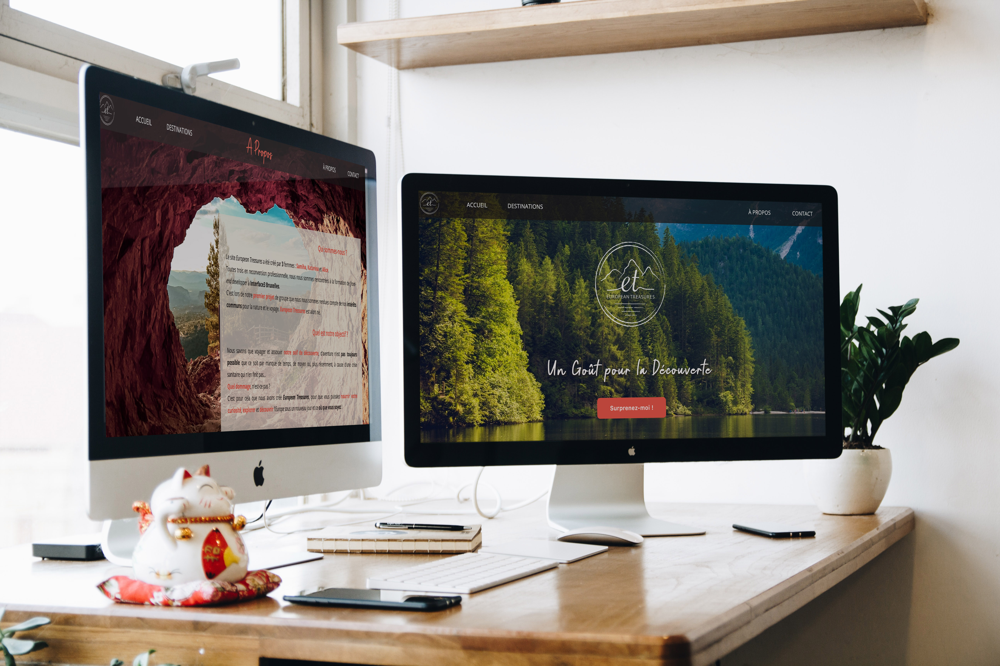
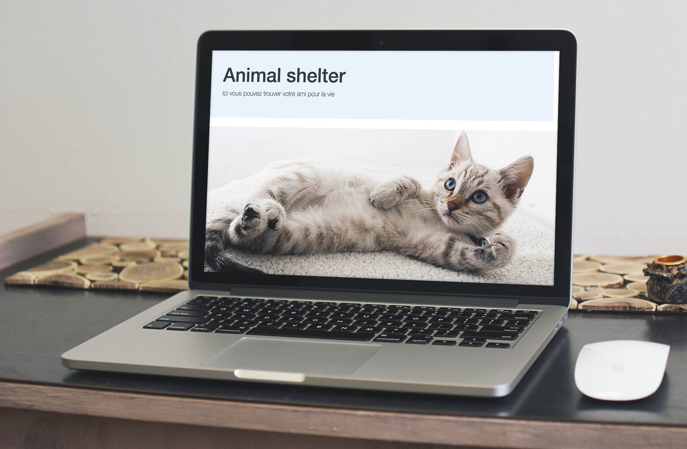

Le site est créé lors de ma formation de développement front-end à Interface 3 Bruxelles, avec deux autres étudiants, Alice Refla et Samiha Jebril.
Nous avons trouvé notre intérêt commun à voyager et à découvrir la nature et c'est ainsi que ce site est né.
C'est une "one page application" qui prend les données d'un fichier json.
Les photos sont affichées dans un carrousel.
Avec plusieurs filtres de recherche.
Et équipé d'une carte interactive.
Le jeu 'bras robotique' a été créé pendant les trois jours de Hackathon organisé dans interface3. Ce jeu a été réalisé par 5 étudiants, Ngan Pickery, Anaïs Van Den Houtaer, Thao Nguyen Thi Phoung , Kelly Bruyninx et moi. Ma part du travail était la création de site web et l'intégration du jeu dans le site
Le site 'Animal shelter' a été créé pendant le cours de PHP organisé dans interface3.
